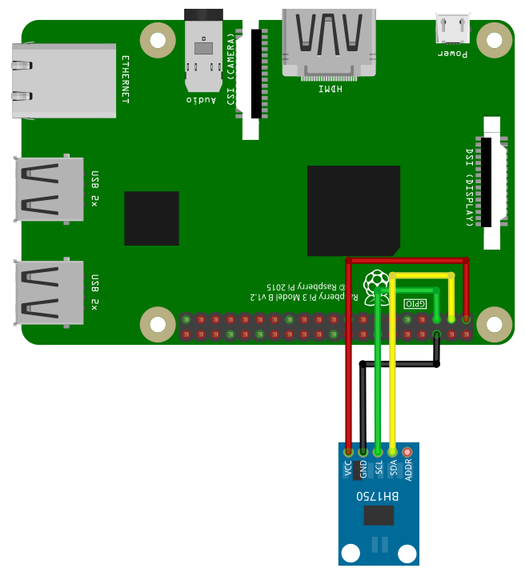

For running this example, you need a BH1750 sensor. SmallBASIC PiGPIO 2 is using the I2C-protocol for communication. The Raspberry Pi support this protocol in hardware, but by default the protocol is disabled. Therefore you have to setup I2C as described here. In the next step please wire the sensor as shown in the following image.

The I2C bus is using pin 2 (SDA1) and 3 (SCL1). Please be careful, the sensors are usually driven with 3.3V. The sensor from Adafruit can be driven with 3.3V or 5V. If you don’t connect the address pin, then the sensor will use address 0x23.
The following code uses the generic I2C routines to read the sensor.
import i2c
Print "Connect to BH1750"
sensor = i2c.Open(0x23, "/dev/i2c-1")
' Power down
i2c.write(sensor, 0x00)
' Power on
i2c.write(sensor, 0x01)
delay(1000)
' Read one time with low resolution
d = i2c.ReadReg(sensor, 0x23, 2)
ValueLowRes = ((d[0] lshift 8) BOR d[1]) / 1.2
delay(1000)
' Read one time with high resolution
d = i2c.ReadReg(sensor, 0x20, 2)
ValueHighRes = ((d[0] lshift 8) BOR d[1]) / 1.2
print "Low resolution : " + ValueLowRes + " lx"
print "High resolution: " + valueHighRes + " lx"